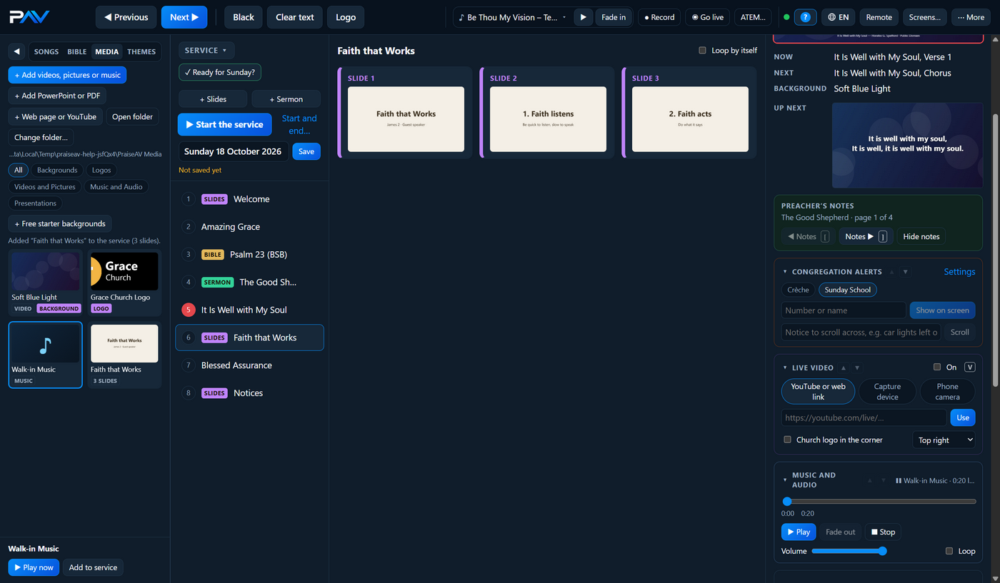
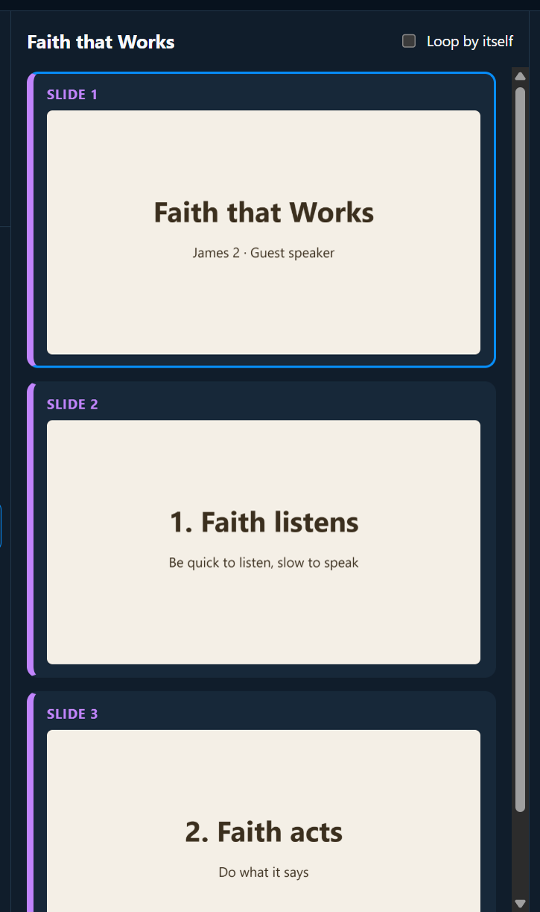

Media and slides
PowerPoint and PDF
A visiting speaker brings slides on a USB stick? Add them to the service.
Adding slides
In the Media tab, click + Add PowerPoint or PDF and choose the file. Or drag the file onto the service.
PraiseAV makes a picture of each slide. It says how far it’s got (“Making slides… 4 of 12”), then adds the slides to the service.
Wait for that import to finish before removing the speaker’s USB stick. PraiseAV keeps its own copy of the PowerPoint alongside the slide pictures. Pictures and videos embedded inside the PowerPoint file travel with that copy. A video linked to another file or website still needs that file or an internet connection at church.


Click a slide to put it on screen, and use Next as normal. The slides are kept in the Media tab under Presentations, so you can add them to another service.
Which files
- PDF: opens directly, provided the file itself is valid.
- PowerPoint (PPTX, PPT, PPS, PPSX), LibreOffice (ODP) and Keynote (KEY): need Microsoft PowerPoint or the free LibreOffice on this computer. PraiseAV uses PowerPoint if it’s there (closest to how the slides were made), otherwise LibreOffice.
If neither is installed, PraiseAV offers to open the LibreOffice download page. Install it once, then add the PowerPoint again.
Check the result of an automatic LibreOffice import. A PowerPoint file can look different when another program renders it: fonts, text boxes, layered pictures and effects may shift. PraiseAV uses LibreOffice to make still slide pictures; it does not run Impress animations during the service. Preview every imported slide before the service, especially a visiting speaker's file.
Using Apache OpenOffice? PraiseAV does not currently detect Apache OpenOffice as an automatic converter. Open the presentation in OpenOffice Impress, choose File › Export as PDF, then add the PDF to PraiseAV. This needs no Microsoft PowerPoint. The PDF shows the text and pictures as still slides; animations and embedded videos do not play. If the speaker needs a video, ask for the video file separately and add it from the Media tab.
Using ONLYOFFICE Desktop Editors? PraiseAV does not currently detect it as an automatic converter either. Open the presentation in ONLYOFFICE, choose File › Save as › PDF, then add the PDF to PraiseAV. Check the exported PDF on the church computer: it preserves still slide content, while animations and embedded media need another playback route. See ONLYOFFICE's presentation export guide.
Animations and videos (with Microsoft PowerPoint)
If Microsoft PowerPoint is installed on the computer that runs the service, PraiseAV can use it to play the presentation's interactive parts:
- Animations work: points appear one at a time.
- Transitions between slides work (a fade, a wipe…).
- Videos inside the slides play, with their sound.
For a visiting speaker, test one slide with a video and its sound on the church computer before the service, then remove the USB stick and test it again. Video playback depends on PowerPoint and the formats installed on that computer. Ask the speaker to embed videos, use MP4 (H.264 video and AAC audio) where possible, and bring a PDF copy as a fallback. A PDF preserves pictures and text but cannot play its embedded PowerPoint animations or videos.
Above the slides it says Plays in PowerPoint. Put the first slide on screen and press Next as usual (the arrow keys, Space, a clicker, or the phone remote). Each press does what a click would do in PowerPoint: the next point, then the next slide. Back goes back a step. While it plays, the line above the slides says where you are, for example “slide 2 of 12, step 1 of 3”.
After the last slide, Next goes on to the next item in the service, as with songs. Putting anything else on screen (a song, a reading) closes the slide show by itself.
Black and Logo work as normal, and so do parent alerts.
Good to know:
- PowerPoint opens out of sight when you click the presentation in the service, so it starts quickly when you show it. The very first time can take a few seconds; the screen stays black meanwhile, so nobody sees all the points before the speaker gets to them.
- Don’t close PowerPoint or click on it while the slides are showing. PraiseAV works it for you.
- The sound of videos in the slides comes out of the computer’s normal sound output, the same as PraiseAV’s own videos.
- Slides that move on by themselves (if the speaker set timings in PowerPoint) do so here too, and the slide cards follow.
- If PowerPoint can’t play the file, PraiseAV says so above the slides and shows the pictures instead.
What the livestream, recording and other screens show
- ◉ Go live and ● Record show the slides exactly as the room sees them, animations and videos included. (The sound of a video in the slides reaches the livestream the way your other sound does: through the mixer or microphone.)
- The preacher’s screen says which slide is on and what’s next, as it does for pictures.
- Screens on the network (such as OBS) show each slide as a still picture: the slide as it looks when all its points are in.
Without Microsoft PowerPoint
On a computer with only LibreOffice, or for a PDF, each slide is a still picture, so:
- Animations (points appearing one by one) and transitions don’t happen. Each slide shows as it looks at the end.
- Videos inside the PowerPoint don’t play. Ask for the video file separately and add it from the Media tab.
Above the slides it says Shown as pictures. The PowerPoint file itself is kept with the pictures in the media folder, so on a computer that has PowerPoint (and the same media folder) it plays with its animations.
Speaker’s notes
The speaker’s notes aren’t brought in. Paste them into a sermon to show on the preacher’s screen.
Moving on by itself
Tick Loop by itself above the slides to make them move on every few seconds and go round again: good for a notices presentation before the service. See Announcement loops.